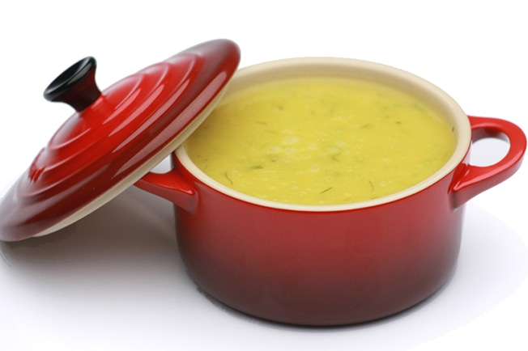

Sopa de Legumes
 fácil serve 1 pessoaIngredientes
- 1 xícara (chá) de seleta de legumes
- ½ cebola
- 1 dente de alho
- 1 colher (chá) de azeite
- 1 xícara (chá) de água
- 1 colher (chá) de missô (pasta de soja fermentada)
- sal e pimenta-síria a gosto
Modo de Preparo
Pique fino a cebola e o alho.
Leve uma panela ao fogo médio e coloque o azeite. Quando aquecer, junte a cebola, mexa bem e, quando estiver levemente dourada, acrescente o alho. Refogue por mais 1 minuto.
Acrescente a seleta de legumes (podem estar congelados ainda) e refogue por 3 minutos, mexendo sempre para não queimar. Tempere com sal e pimenta-do-reino, lembrando que a pasta de soja já é salgada. Pegue leve no sal.
Coloque a água e aumente o fogo para alto. Quando começar a ferver, deixe cozinhar por 5 minutos.
Abaixe o fogo e, quando a fervura parar, acrescente a pasta de soja. Misture até dissolver e deixe cozinhar por mais 1 minuto.
Se quiser a sopa lisinha, na própria panela, bata com o mixer, com cuidado para não se queimar. Você também pode bater a sopa no copo do mixer; fica ainda mais fácil. Se preferir, deixe esfriar um pouco, transfira para o liquidificador, coloque um pano de prato dobrado sobre a tampa, segure firme e bata até que a sopa fique lisa. Atenção: segure firme a tampa do liquidificador com um pano de prato para evitar que o vapor do caldo abra a tampa.